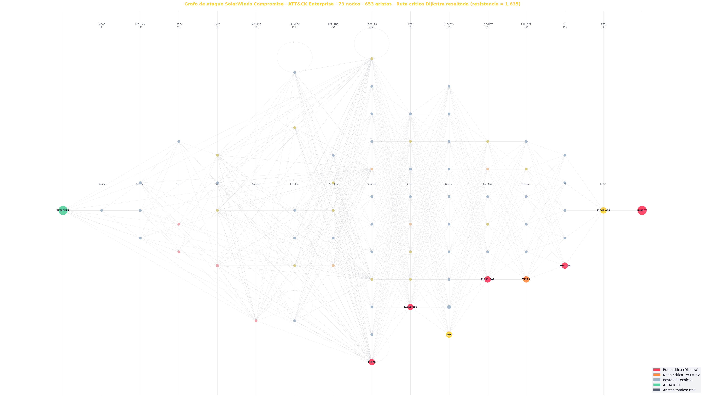

Dijkstra · SolarWinds CompromiseUniversidad de Cuenca · DEET · 2026
📊 Grafo de ataque completo

Nodos (tecnicas)
73
Aristas
653
Tacticas ATT&CK
14
Leyenda
ATTACKER · entrada
Ruta critica · Dijkstra
Resto de tecnicas
Arista ruta critica
Arista alternativa
Columnas = tacticas ATT&CK ordenadas por kill chain. Cada nodo es una tecnica real usada en SolarWinds. La ruta roja es el camino de menor resistencia hallado por Dijkstra.